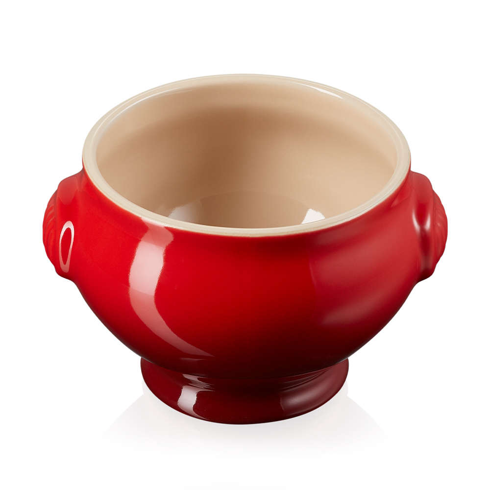

A soup so clear you'd think nothing is there!
Home

A clean, clear soup that will clense your heart and soul
This cyrstal clear soup is so wonderful to make after a sip you'll want to wonder how this recipie didn't make it to you sooner than it has! We'll need a few key special ingredients and we do reccomend to not substitue anything as it will effect the clarity and end flavour.
Ingredients
- Moon water (We suggest making your own on your next full Moon
- A couple of your birthstones
- Morning dew collected at sunrise
- Good Vibes
Steps
- After collecting your Moon water add half into a seperate bowl
- Add your birthstones into one of the containers
- Add a few drops of moring dew into the remaining Moon water
- Spend 10-20 min self meditating and reflect on your journey
- Strain the birthstones out of the now seasoned water
- Further stain out any impurites through a cheese cloth
- Then stain through active carbon and distil and condense the water
- Add into the bowl and serve with a few drops of the morning dew Moon water you still have
- If the spice is too much to handle you can always add more morning dew Moon water as needed